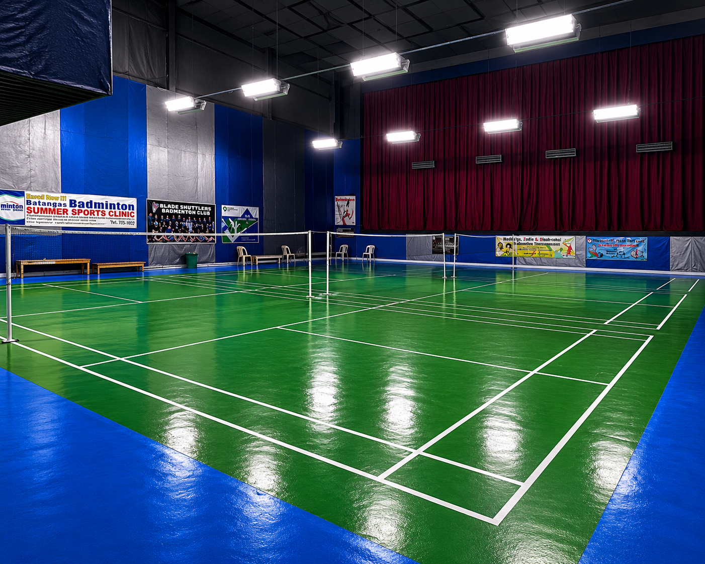

Computer Hardware
Basic knowledge and interest in computer components and hardware-related tasks.
Technical interestPERSONAL PORTFOLIO
Hello, I'm
A fourth-year Bachelor of Science in Information Technology student at STI College Batangas, interested in technology, computer hardware, and building useful digital solutions.
01 — ABOUT ME
I am a fourth-year BS Information Technology student at STI College Batangas. I have an interest in computer hardware and information technology, and I have participated in the documentation of a web-based court reservation project.
This portfolio presents my education, technical interests, and selected academic work as I continue developing my skills and preparing for opportunities in the IT field.
02 — WHAT I KNOW
A snapshot of the tools and technical areas I have shared so far.
Basic knowledge and interest in computer components and hardware-related tasks.
Technical interestPreparing and formatting academic documents and project documentation.
Productivity toolContributing to the documentation of an academic information system project.
Project experienceAdditional programming languages, databases, and development tools can be added as you confirm them.
To be updated03 — SELECTED WORK
An academic project that demonstrates my experience contributing to an IT system.

A web-based reservation system concept for a badminton and fitness facility. It is designed to help users view court schedules and manage reservations, while supporting facility operations.
Project description and technology details can be expanded when the final system features and tools are confirmed.
04 — MY BACKGROUND
Bachelor of Science in Information Technology (BSIT)
4th Year StudentTechnical-vocational certification.
TESDA NC II05 — GET IN TOUCH
Thank you for visiting my portfolio. For academic or professional inquiries, you can reach me through the email address below.
Batangas City, Philippines
For privacy, a personal phone number is not displayed on this public portfolio.